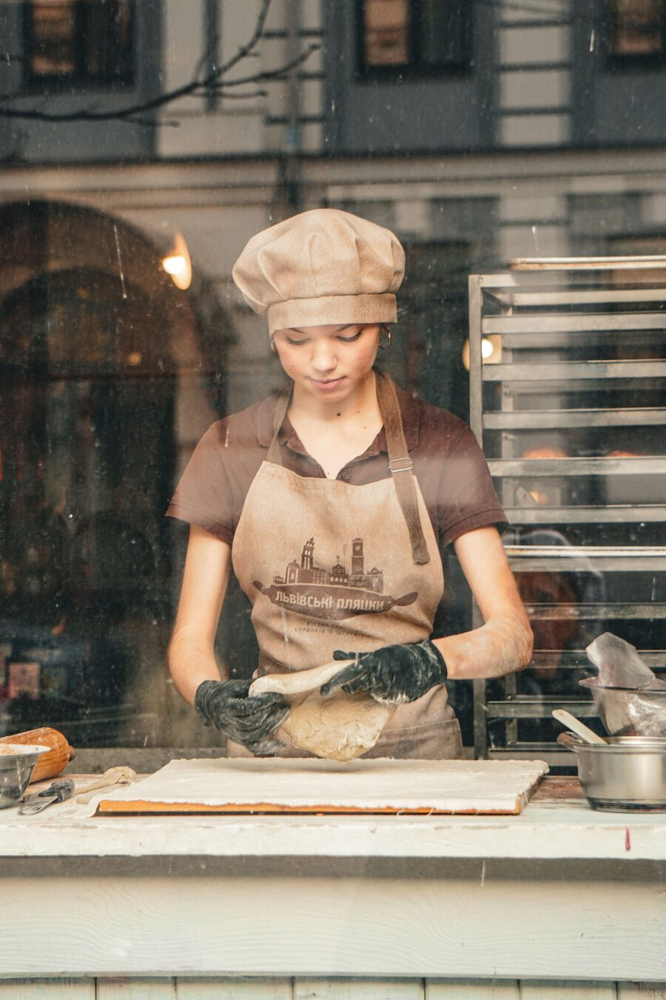

About Mia's Bakery
Our Story
Mia's Bakery is a neighbourhood bakery established in 2026 in Cape Town, South Africa. It specialises in freshly baked bread, pastries, and custom celebration cakes made from scratch daily using quality ingredients. Have a look at what we bake.
Our Mission
To bake fresh, high-quality bread, pastries, and cakes daily using quality ingredients, while providing warm, friendly customer service that makes every visit feel personal. We aim to be a place where customers feel welcomed and where every order, big or small, is made with genuine care.
Our Vision
To become a trusted neighbourhood bakery recognised throughout Cape Town for quality, consistency, and community connection — a bakery that grows alongside the community it serves, known not only for great bread and cakes, but for the relationships built with every customer who walks through the door.
Meet the Team

Mia Jacobs
Founder & Head Baker
Want to talk cakes? Get in touch or send us an enquiry.